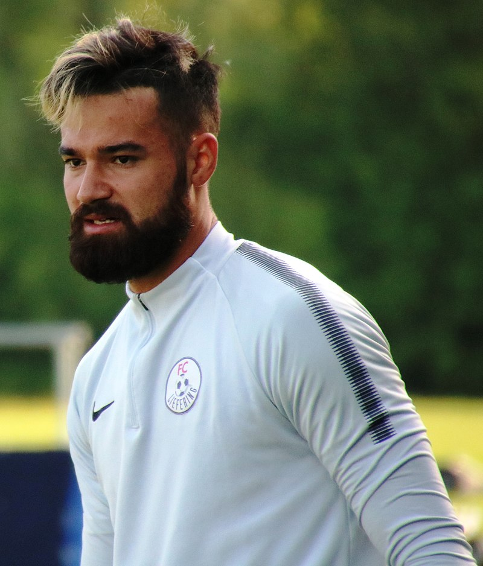
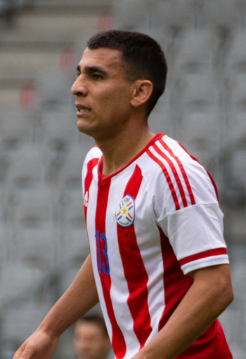

| Nombre | Posición | Edad | Bibliografía | Portada |
|---|---|---|---|---|
| Alejandro Gamarra | Mediocampista | 36 |
Alejandro Gamarra continúa activo en la liga local como mentor y líder en el campo. Tras retirarse de la selección en 2024, combina su carrera como jugador con formación en coaching deportivo, aportando su visión táctica y experiencia. |
|
| Alexis Rojas | Delantero | 28 |
Alexis Rojas se ha consolidado en ligas internacionales, destacando en Europa y Sudamérica. Es un referente ofensivo y capitán en su club, además de convocado regularmente a la selección nacional. |
|
| Miguel Almirón | Mediapunta / Extremo | 31 |
Miguel Almirón sigue siendo un ícono del fútbol paraguayo en la MLS, donde es capitán y embajador del deporte nacional. Además, lidera proyectos sociales y mantiene su lugar como referente ofensivo en la selección. |
 |
| Andrés Cubas | Mediocentro defensivo | 29 |
Andrés Cubas mantiene su nivel físico y capacidad para recuperar balones. En 2025 es pieza clave en su club europeo y aporta experiencia en la selección paraguaya. |
|
| Antonio Sanabria | Delantero centro | 29 |
Antonio Sanabria destaca por su potencia y eficacia goleadora, jugando en clubes de alto nivel en Europa. Sigue siendo convocado para la selección paraguaya y aporta liderazgo en el ataque. |
 |
| Carlos González | Delantero | 34 |
Carlos González, con amplia experiencia internacional, continúa siendo un goleador confiable y referente para las nuevas generaciones en Paraguay. Su potencia y definición permanecen intactas. |
 |
| Gastón Giménez | Mediocentro | 33 |
Gastón Giménez aporta versatilidad y buen manejo de balón en su club argentino. Su aporte defensivo y ofensivo lo mantiene como un jugador clave en el medio campo. |
|
| Gustavo Gómez | Defensa central | 33 |
Gustavo Gómez sigue siendo líder en la defensa, capitaneando su club y la selección paraguaya. Su solidez y experiencia son fundamentales para la estabilidad defensiva. |
 |
| Junior Alonso | Defensa central | 31 |
Junior Alonso mantiene su nivel en ligas europeas y brasileñas, destacando por su capacidad de anticipación y salida limpia del balón. Continúa siendo llamado a la selección paraguaya. |
 |
| Lucas Barrios | Delantero centro | 38 |
Lucas Barrios se ha retirado recientemente, dejando un legado como delantero potente y goleador en Sudamérica y Europa. Actualmente está vinculado al fútbol como entrenador y comentarista. |
|
| Omar Alderete | Defensa central | 29 |
Omar Alderete es un defensa central versátil y fuerte, con experiencia en ligas europeas y sudamericanas. Es pieza fundamental en la defensa paraguaya y en su club actual. |
|
| Cristian Riveros | Mediocentro | 40 |
Cristian Riveros, veterano y referente, se ha retirado del fútbol profesional. Actualmente está involucrado en proyectos de formación y desarrollo de jóvenes futbolistas en Paraguay. |